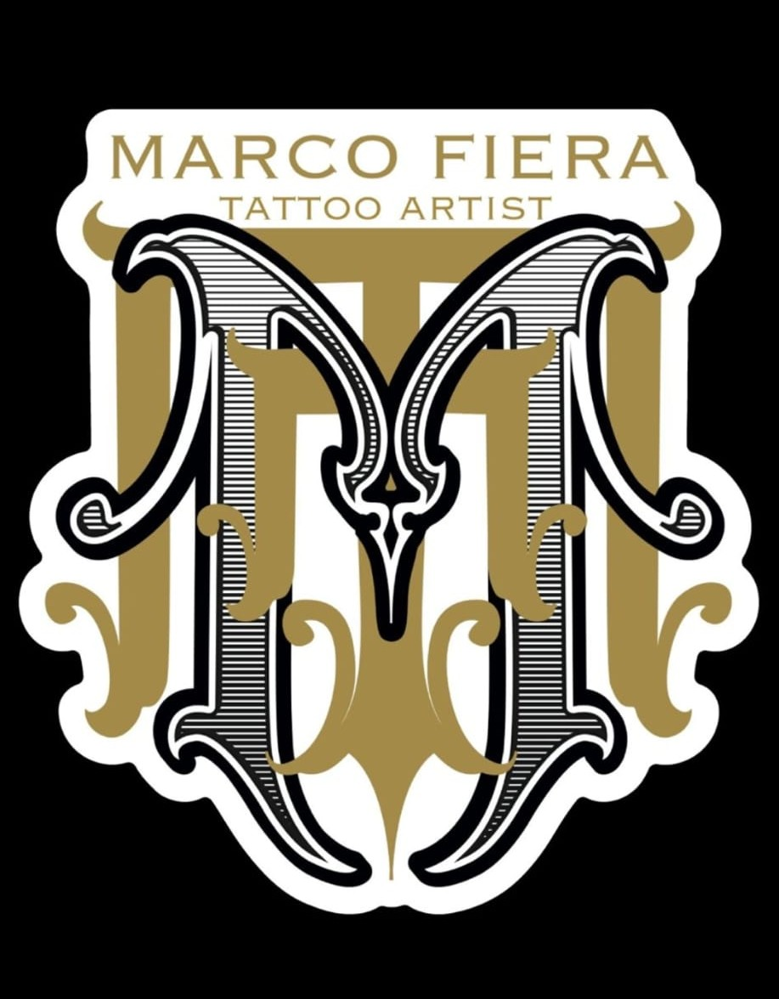

Tattoo Artist • Brindisi
"Ogni tatuaggio racconta una storia."
Marco Fiera è un tattoo artist specializzato in realism, black & grey, cover up e progetti personalizzati. Ogni lavoro nasce dal confronto con il cliente per trasformare un'idea in un'opera unica.
Presso Sailor Ink Tattoo Studio - Brindisi
Visita lo StudioGalleria fotografica in aggiornamento.